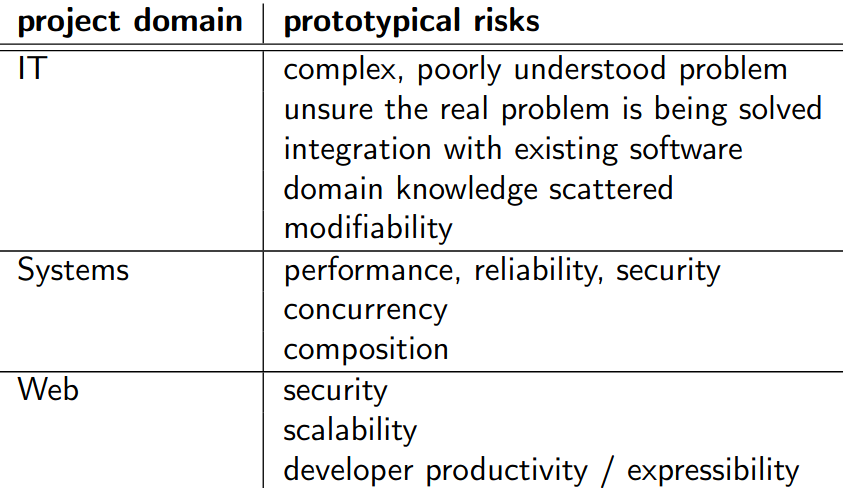
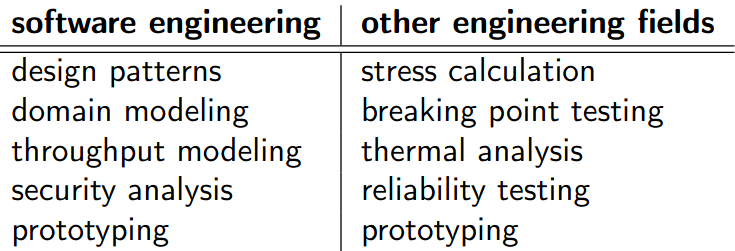

Teórica 08
Riscos Arquiteturais
Abordagem Orientada aos Riscos
- Ajuda a desenvolver software de qualidade de forma rápida e barata;
- Permite que os arquitetos de software experimentem múltiplas arquiteturas;
- Ajuda a responder a 2 questões:
- Quanto trabalho de arquitetura de software é preciso fazer?
- Que técnicas é que devem ser utilizadas?
- Guia à aplicação de um conjunto mínimo de técnicas de arquitetura de forma a diminuir os riscos ligados à pressão nos arquitetos de software;
- Segue 3 passos:
- Identifica e prioritiza riscos;
- Seleciona e aplica um conjunto de técnicas;
- Avalia a redução do risco.
Riscos
- Em engenharia, riscos são conhecidos como a probabilidade de existir uma falha multiplicado pelo impacto; \[ risk\ =\ probabilidade\ de\ falha \times impacto \]
- A probabilidade de falha e o impacto não são certos, visto que é muito difícil medi-los de forma precisa;
- Um risco pode existir (alguém o vê) mesmo que este não exista;
- Pode ser qualificado categoricamente, por vezes como uma falha de um atributo de qualidade necessário;
- Devem ser bem descritos, para que, posteriormente, possa ser testada a sua mitigação;
Protótipos de Riscos Comuns

Prioritização de Riscos
- Os riscos não são todos iguais, pelo que devem ser prioritizados. Muitas vezes, esta prioritização é feita com base numa discussão das prioridades entre os elementos das equipas;
- Os riscos podem ser caraterizados em duas grandes dimensões:
- Com prioridade para os stakholders (de negócio);
- Os desenvolvedores perceberam dificuldades (de engenharia);
Mitigação de Riscos
- As técnicas de mitigação de riscos são muito vastas, desde pura análise até puras soluções.
- Vejam-se algumas técnicas:

- É essencial que se seja capaz de explicitar como escolher as técnicas de forma a responder aos riscos;
- Para isso, pode criar-se uma espécie de manual com entradas no seguinte formato:
- Se tivermos
nome do risco, devemos considerar utilizarnome da técnicapara o reduzir.
- Se tivermos
- De notar, que uma técnica poderá ser boa a reduzir alguns riscos, mas não outros, sendo que, idealmente, uma técnica singular deveria ser endereçada para resolver todos os riscos conhecidos;
- Alguns riscos podem ser mitigados utilizando algumas técnicas préviamente conhecidas, enquanto que, para outros, é necessário descobrir essas técnicas no momento.
Esforço proporcional aos riscos
- A abordagem orientada aos riscos utiliza o seguinte princípio:
- Os esforços colocados na arquitetura devem ser proporcionais ao risco de falha.
- Assim, utilizando esta abordagem, a preocupação surgirá nas áreas em que riscos de falha são percetíveis.
Estilos de Design
- Evolutionary Design (NDUF);
- Planned Design (BDUF);
- Minimal Planned Design (EDUF/LDUF).
Evolutionary Design
- O design do sistema cresce conforme o sistema é implementado;
- Práticas agile utilizadas para combater o "caos":
- Refactoring ajuda a "limpar" locais de design não coordenados;
- Design orietnado aos testes garante que as mudanças no sistema não provocam a perda ou a falha de funcionalidades já existentes;
- Tem uma integração contínua e providencia a mesma codebase a toda a equipa.
Planned Design
- A arquitetura é detalhada antes da sua construção;
- Poucas pessoas defendem que se faça isto para todo um sistema;
- É útil para quando diversas equipas se encontram a trabalhar em simultâneo numa mesma arquitetura partilhada;
- Mesmo nesta abordagem, raramente se tem uma arquitetura a 100% antes de se iniciar a prototipagem ou o código;
- O design pode ser aperfeiçoado com o feedback do código.
Minimal Planned Design
- Estilo híbrido das abordagens anteriores que permite o seu balanceamento;
- Uma forma de o fazer é, inicialmente, efetuar-se o planned design para garantir que a arquitetura é capaz de lidar com os grandes riscos do sistema e as alterações futuras aos requisitos podem ser tratadas através de um design local ou do evolutionary design;
Sumário dos Estilos de Design
- A abordagem risk-driven é compatível com os 3 estilos;
- Todos os estilos concordam que o design terá, obrigatoriamente, de acontecer em algum ponto;
- No NDUF quando um risco é considerado suficientemente grande;
- No BDUF numa fase inicial;
- No LDUF é uma mistura dos dois anteriores.